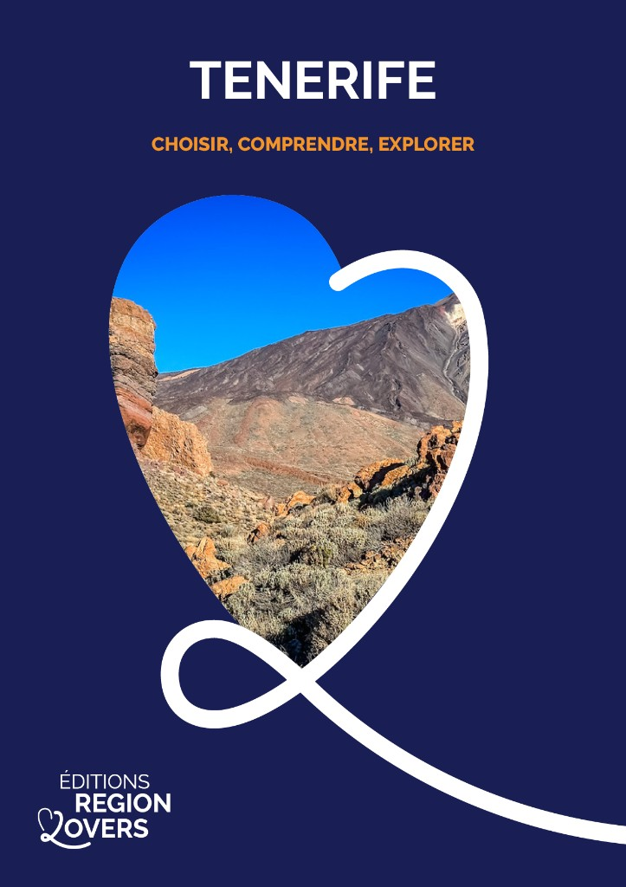
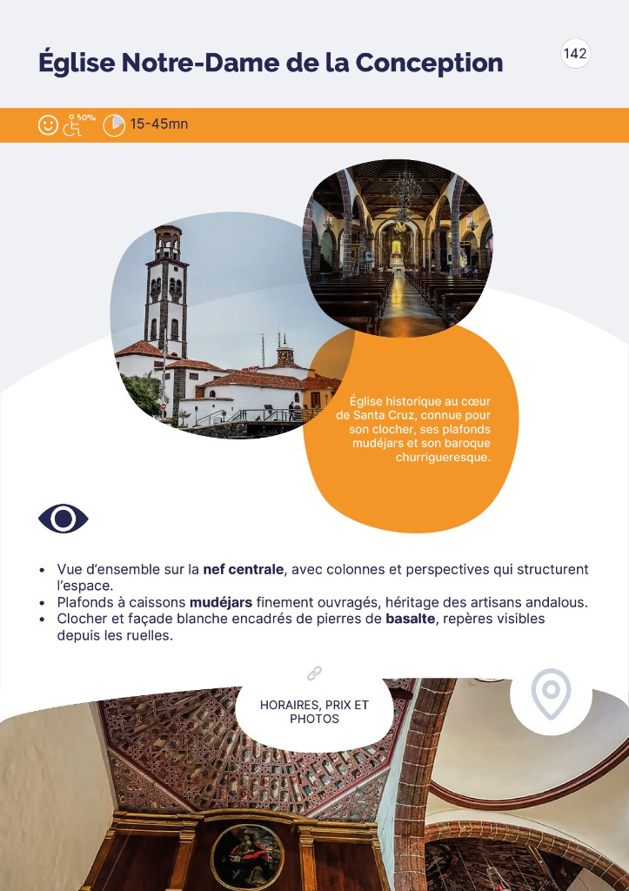
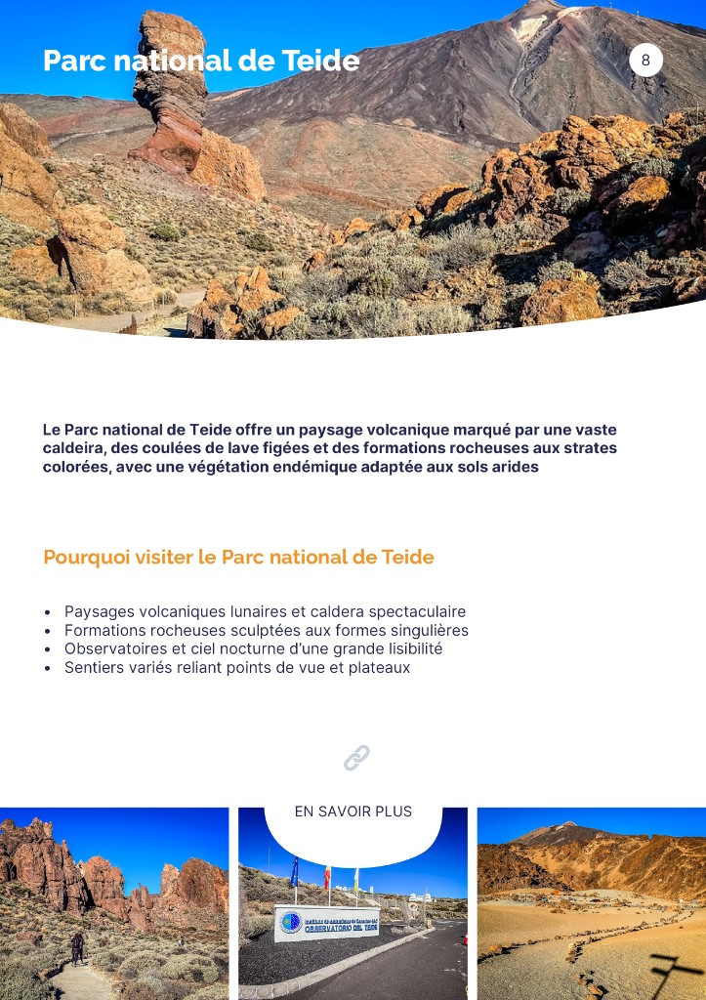
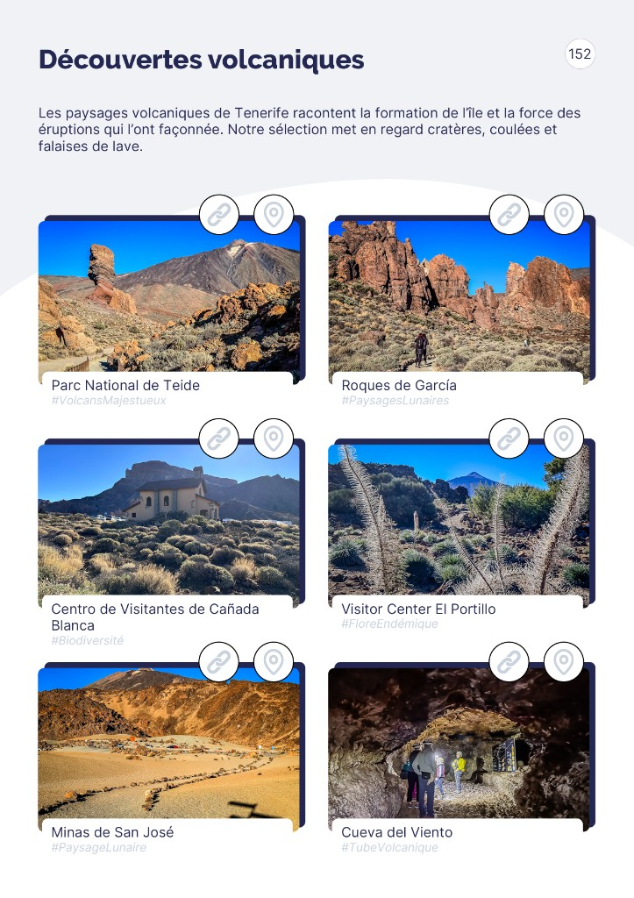

Un guide qui ne cherche pas à tout dire. Il aide à choisir — les lieux, les zones, les ambiances — pour construire un voyage qui vous ressemble vraiment.
Trop d'infos, pas assez de clarté ?
Le guide Tenerife Canarias Lovers n'est pas une base de données. C'est un outil de décision — pensé pour smartphone et tablette — conçu pour vous permettre de comprendre la destination avant de réserver, et de construire un voyage personnel, pas générique.
"Le guide vous aide à choisir. Le site vous aide à organiser. Une philosophie simple, appliquée à chaque page."
— CANARIAS LOVERS


Une sélection éditoriale rigoureuse, des visuels au cœur de chaque page, une structure qui rend la comparaison immédiate.
Villages, plages, paysages volcaniques, jardins, points de vue, randonnées, expériences familiales. Chaque lieu mérite d'y être.
1 lieu = 1 page structuréeLes photos ne sont pas décoratives. Elles permettent de comprendre l'ambiance, de comparer, de se projeter avant de décider.
Projection visuelle avant tout1 carte générale + 1 carte par cluster géographique. Comprendre les distances réelles et construire des journées cohérentes.
14 zones couvertesVolcans, plages, randonnées, jardins, ambiances familiales, architecture. Explorer par envies plutôt que par ordre géographique.
Explorer par enviesLisibilité, navigation simple, consultation rapide. Un outil qu'on utilise vraiment — dans le canapé, dans l'avion, sur place.
Tablette & mobile optimisésChaque lieu renvoie au site pour horaires, prix et conseils pratiques. Le guide choisit, le site organise.
Infos pratiques toujours à jour| 112 lieux | Fini le tri infini. Une sélection éditoriale honnête à la place des listes exhaustives qui ne vous disent pas quoi choisir. |
| 3 photos / lieu | Vous visualisez l'ambiance avant d'y aller. La photo n'illustre pas — elle aide à décider. |
| 1 carte par zone | Vous comprenez les distances réelles et construisez des journées logistiquement cohérentes. |
| 6 pages inspiration | Vous explorez selon vos envies du moment : volcans aujourd'hui, plages demain. |
| 1 lieu = 1 page | Comparer deux endroits prend 30 secondes. La décision devient simple, pas stressante. |
| Liens vers le site | Les infos pratiques sont toujours à jour, sans que le guide ne vieillisse. |
En plus des 112 fiches lieux, le guide propose des entrées par ambiances — pour explorer Tenerife selon ce qui vous attire vraiment.
« C'est le guide le plus complet que j'ai trouvé et il rend l'organisation d'un voyage photographique beaucoup moins cauchemardesque. »
« Excellent ! Super excitée d'avoir trouvé quelque chose d'aussi utile comparé aux autres livres que j'ai achetés! »
« C'est génial ! Je trouve le guide très bien écrit, avec beaucoup d'informations pertinentes et utiles. Des informations telles que le temps nécessaire pour visiter un endroit sont très utiles pour planifier une visite. Et les photos sont incroyables – elles vous donnent vraiment envie d'y aller »
À l'heure où les guides de voyage se multiplient sans que personne ne soit jamais sur place, nous faisons le choix inverse : chaque lieu dont nous parlons, nous l'avons visité. Chaque photo, nous l'avons prise.
Pas de contenu généré, pas d'informations recyclées. Un regard humain, de terrain, 100% indépendant.
Accès immédiat au guide numérique complet. Lisible sur smartphone, tablette et ordinateur. Connecté au site Canarias Lovers pour les informations pratiques à jour.